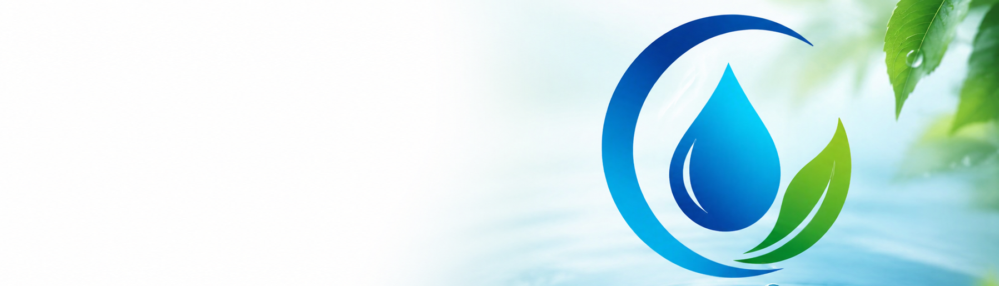
Sobre nosotros
Conectando comunidades con soluciones de agua limpia para un Panamá más sostenible e informado.
Nuestra historia
¿Quiénes somos?
ClearDrop es una iniciativa impulsada por estudiantes que busca mejorar la comunicación relacionada con el acceso al agua mediante tecnología, información y participación comunitaria. Nace de la necesidad de conectar a las personas afectadas por problemas del suministro de agua con soluciones efectivas y oportunas.
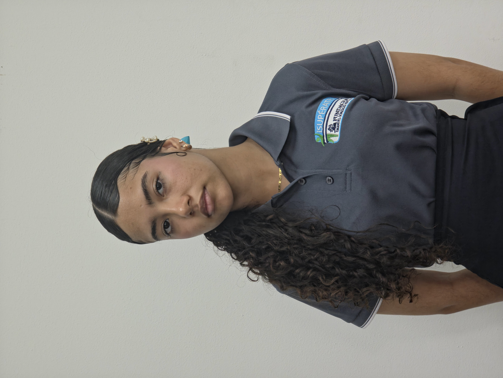
Keitlyn Castillo
Desarrollo & Traducción
Desarrollo de funcionalidades con JavaScript, integración de APIs y creación del sistema de traducción.
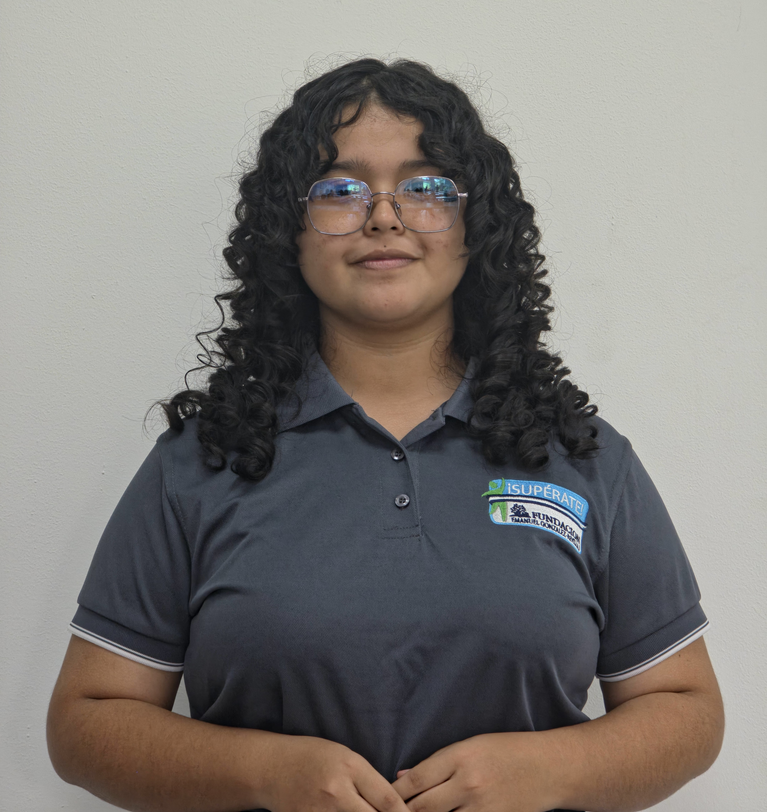
Ilcris Araúz
Coordinación & Desarrollo
Coordinación del proyecto, revisión general y desarrollo de estilos e interfaces mediante CSS.
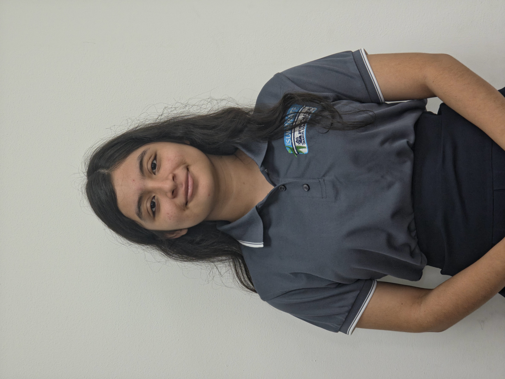
Noellys Jordán
Diseño & UX
Dirección del diseño visual, creación de interfaces y mejora de la experiencia e intuitividad del usuario.
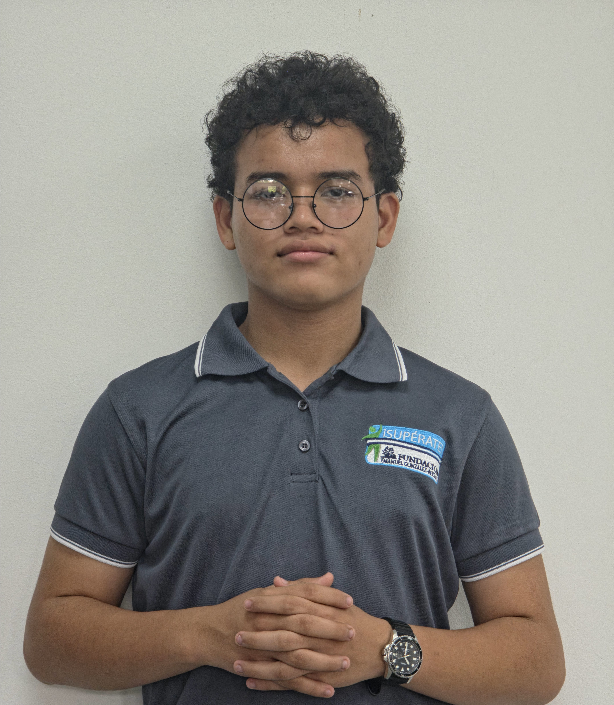
Eitan Artunduaga
Desarrollo & Innovación
Implementación de ideas mediante HTML, CSS y JavaScript, además de investigación de herramientas para el desarrollo.
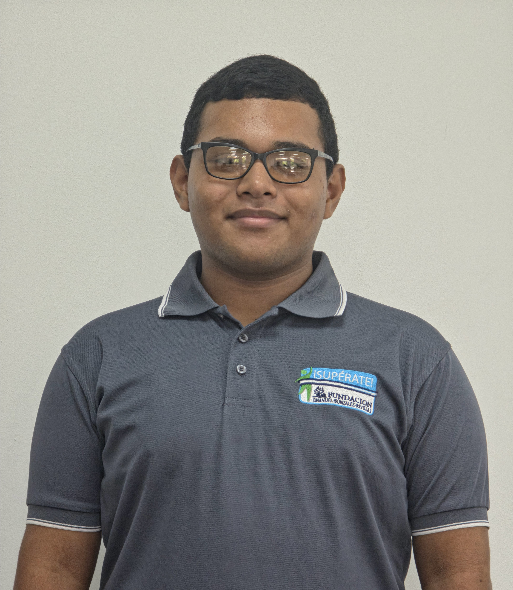
Adrián Jordán
Multimedia & Investigación
Investigación y creación de recursos visuales, además de elaboración y edición de contenido multimedia.
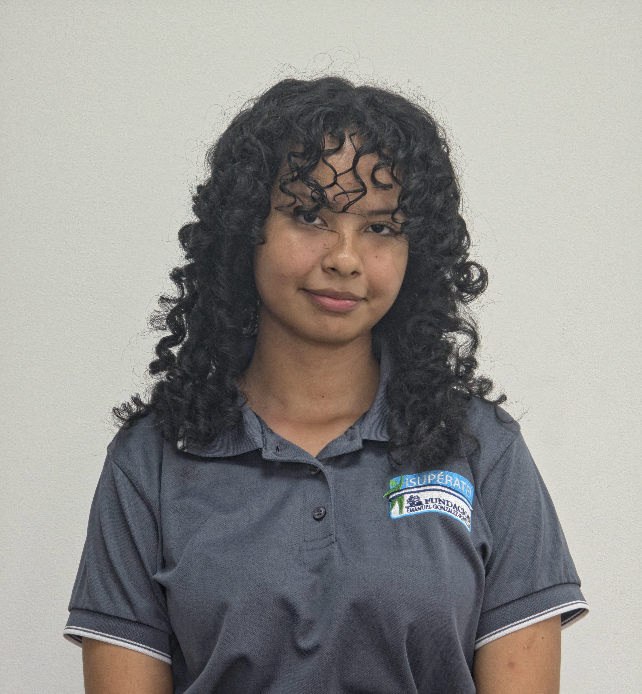
Génesis Morales
Desarrollo & Contenido
Desarrollo de la estructura HTML, organización del contenido y revisión del sistema de traducción del sitio.
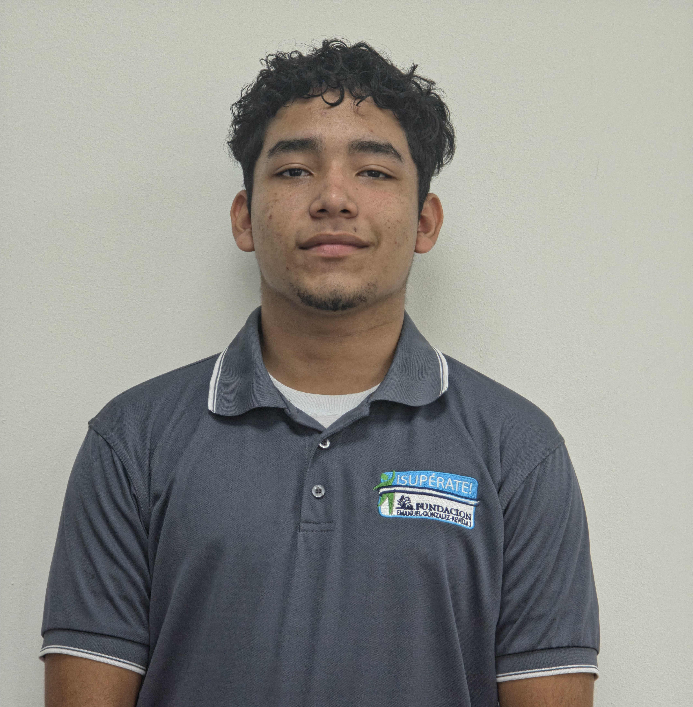
Dians Cádiz
Diseño Visual
Creación de íconos, elementos gráficos y recursos visuales para reforzar la identidad de ClearDrop.
Nuestras funciones
¿Qué hacemos?
Reporte ciudadano
Permite a los usuarios reportar problemas relacionados con el suministro de agua en tiempo real.
Información en tiempo real
Consulta alertas y actualizaciones sobre el servicio de agua en tu zona.
Mapas interactivos
Visualiza reportes, incidencias y zonas afectadas en un mapa actualizado.
Educación ambiental
Accede a recursos, consejos y talleres sobre el uso responsable del agua.
Nuestro propósito
¿Por qué lo hacemos?
En Panamá, muchas comunidades experimentan interrupciones constantes, baja presión o dificultades en el acceso al agua potable. Además, la falta de comunicación oportuna entre los usuarios y las autoridades responsables hace que estas situaciones sean aún más difíciles de afrontar.
ClearDrop busca convertir esa problemática en una oportunidad para mejorar la comunicación, facilitar la participación ciudadana y proporcionar información útil que empodera a las comunidades.
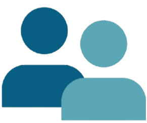
+150 Personas alcanzadas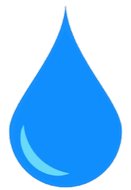
61% Exige soluciónResultados
Nuestro impacto
Comunidades alcanzadas
15+
Corregimientos beneficiados con nuestras iniciativas.
Reportes realizados
100+
Incidencias documentadas y procesadas.
Personas involucradas
150+
Ciudadanos participando activamente.
Recursos disponibles
8+
Módulos de educación ambiental.
Colaboradores
Nuestros aliados
Organizaciones e instituciones que hacen posible nuestro impacto
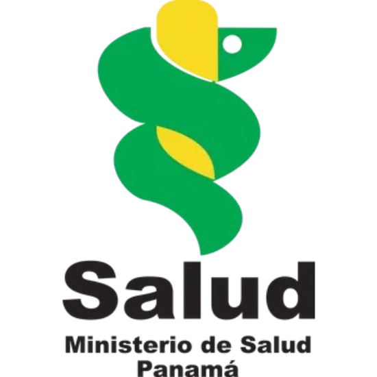
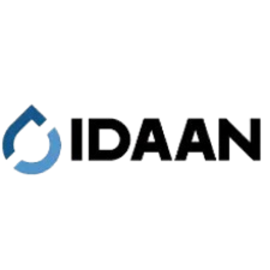
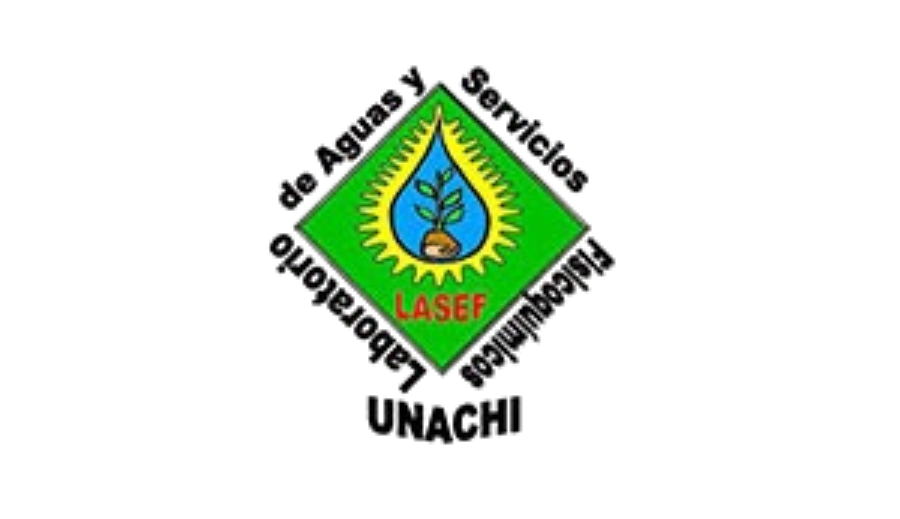
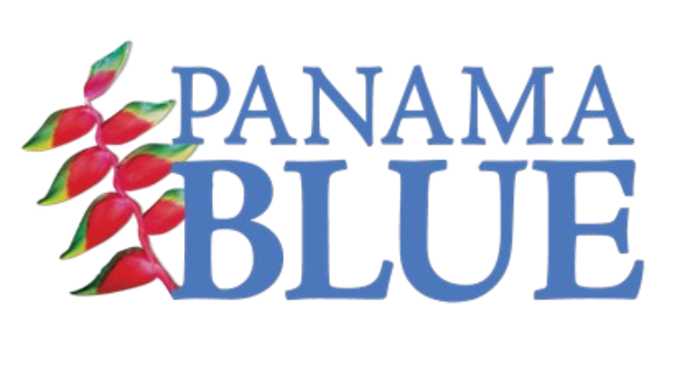
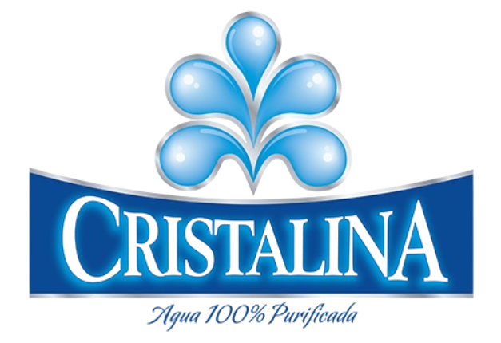
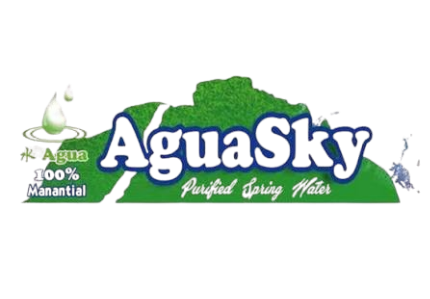
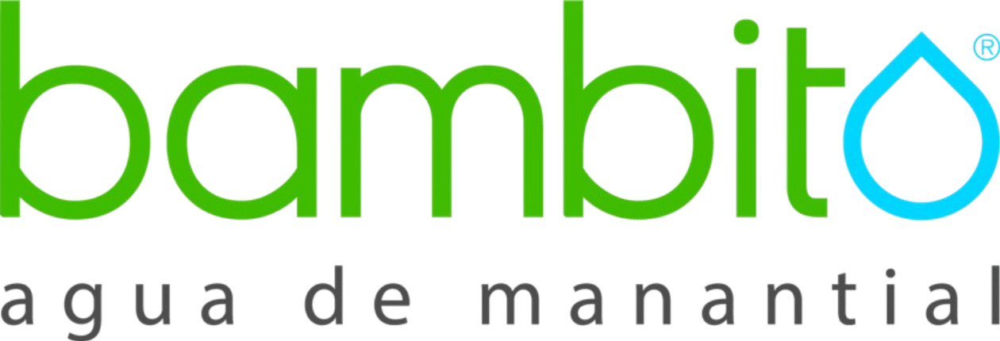